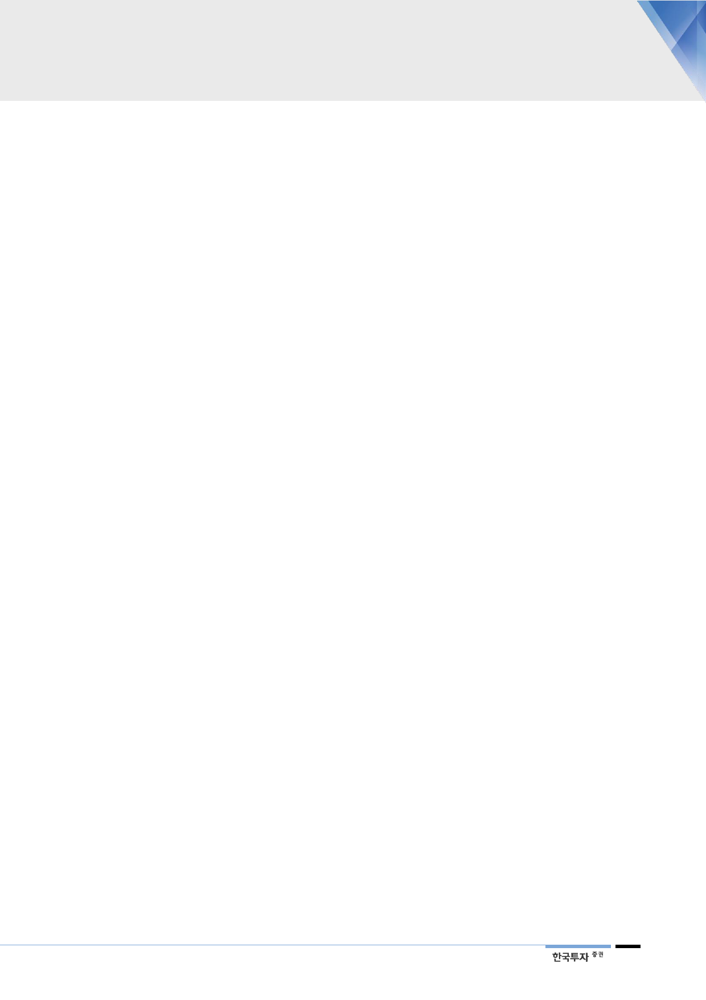

기업개요 및 용어해설
■ 기업개요
LG전자는 2002년 4월 1일을 기준으로 분할 전 LG전자㈜의 전자 및 정보통신사업부문을 인적 분할하여 설립됨. 현재 7
개 사업부로 구성되어 있으며 사업부는 각각 TV 등을 제조하는 HE사업본부, 이동단말을 제조하는 MC사업본부, 생활가
전제품을 제조하는 H&A사업본부, 자동차 부품을 제조하는 VC사업본부, 인포메이션디스플레이, 태양광 모듈 사업을 영
위하는 B2B사업본부, LEㅇ사업 등을 영위하는 LG이노텍으로 나뉨. 생활가전 부분에서는 세계 일등 가전으로 프리미엄
스마트 가전으로 시장을 선도해 나가고 있으며, TV 부분에서는 세계 최초 OLED TV를 양산하며 high-end 브랜드 이미
지를 구축함. 매출 비중은 2018년 1분기 기준 H&A 32.6%, HE 27.2%, MC 14.3%, VC 5.6%, B2B 4.2%, 이노텍
11.4%, 기타 4.7%임.
■ 용어해설
의류관리기(스타일러): 세탁소에 매번 맡기긴 아깝지만 직접 관리하기엔 조심스러운 의류의 구김, 냄새 및 미세먼
지 제거, 살균 등을 도와주는 제품. 물세탁이 어려운 코트나 교복 같은 제품을 관리하는데 유용
히트펌프: 냉매를 순환시켜 발생한 열을 활용해 빨래가 머금고 있는 수분만 빨아들이는 저온 제습 방식
인버터: 모터의 속도를 조절해 상황에 다라 꼭 필요한 만큼만 작동하게 하는 장치. 에너지 효율을 증가시켜 전기
료 부담을 크게 낮추는 기술
듀얼인버터: 컴프레서에서 냉매를 압축하는 장치인 실린더를 2개로 만드는 방식, 기존 방식 대비 15% 더 많은
냉매를 압축 가능해 에너지 효율 증대
LCD: 액정디스플레이. 인가전압에 따른 액정 투과도의 변화를 이용. 자기발광성이 없어 후광이 필요하지만 소비
전력이 적고 휴대용으로 편리한 평판 디스플레이
OLED: 유기발광다이오드. 형광성 유기화합물에 전류를 가하면 스스로 빛을 내는 성질을 이용한 디스플레이
백라이트: LCD 뒤에서 빛을 내는 발광체. LCD는 스스로 빛을 내지 못하기 때문에 광원으로 사용
명암비: 디스플레이에서 동시에 표현할 수 있는 가장 밝은 색과 가장 어두운 색간 차이의 비율
배터리팩: 전기차의 경우 수많은 배터리가 필요한데 이를 패키징 한 부품. 강한 충격에도 견딜 수 있고 발열을 효
과적으로 통제할 수 있어야 한다
공조장치: 공기조절장치. 차실 내의 온도, 습도, 공기의 청정도 등을 쾌적하게 유지하는 시스템의 총칭
카엔지니어링: 차량 개발단계에서 차체 구조나 도어, 외장등의 품질을 최적화 하는 솔루션을 제공하거나 설계 시
스템을 구축하는 사업
ADAS: 첨단 운전자 지원 시스템. 운전중 발생할 수 있는 수많은 상황 가운데 일부를 차량 스스로 인지하고 상황
을 판단, 제어하는 기술
전장부품: 자동차 내부에 탑재되는 전자장치. 구동계, 안전계, 통신계 등에서 사용되며, 내연기관이 전기차로 대
체됨에 따라 수요가 지속적으로 늘고 있음
텔레매틱스: 자동차에 무선통신이 결합됨에 따라 생겨난 차량 무선인터넷 서비스. 차량에서 뉴스수신, 이메일,
GPS추적, 긴급신호전달 등의 기능이 가능해짐. 5G의 개화에 따른 성장잠재력이 풍부
27